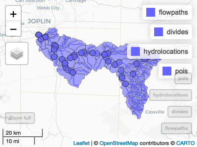
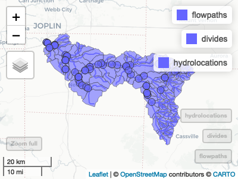
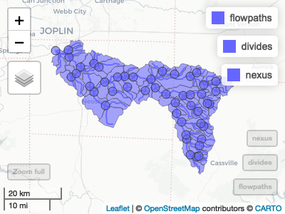

hfsubset provides a lightweight, dependency-minimal subsetting utility for working with Lynker Spatial Hydrofabrics. It is designed to quickly extract spatial and network subsets of large hydrologic datasets, returning only the upstream or contributing features relevant to a specified location.
Overview
The function operates on a Hydrofabric GeoPackage—a standardized container for vector-based hydrologic data layers (e.g., flowpaths, catchments, waterbodies). Given a reference point such as an NHDPlusV2 COMID (comid), Hydrofabric ID (id), or hydrolocation reference (hl_reference), it identifies and extracts all upstream features connected through the hydrologic network.
Each output layer is returned as an sf object containing only features contributing to the specified reference location. This structure makes it straightforward to visualize, analyze, or export targeted drainage areas without needing to process the full dataset.
An optional outfile parameter allows writing the subsetted layers back to a new GeoPackage (or any OGR spec for single layer calls) for persistent storage or sharing, or, if left NULL, allows the data to be returned in memory.
Inputs
- **src**: Path to a local Hydrofabric GeoPackage/geoparquet (typically containing layers such as flowpaths, catchments, waterbodies, etc.)
> **reference**: A hydrologic location identifier. This can be either:
- `id`: A Hydrofabric ID
- `comid`: An NHDPlusV2 COMID
- `hl_reference`: A Hydrolocation reference (`hl_reference`). A hydrolocation reference (`hl_reference`) is a standardized string that encodes both the data source and the native identifier in the form: `{source}-{native_id}`This convention allows hfsubset to resolve references across multiple hydrologic networks or catalog systems without ambiguity.
Usage
library(hfsubset)
library(mapview)
x <- hfsubset(src = glue::glue('{base_dir}/v3.0/reference_fabric.gpkg'),
hl_reference = "nwis-07187000")
#> ℹ Inferred store type: ogr_store
#> ℹ Origin flowpath: 7590701 (VPU: 11)
lobstr::tree(x, max_depth = 1)
#> <list>
#> ├─flowpaths: S3<sf/tbl_df/tbl/data.frame>...
#> ├─divides: S3<sf/tbl_df/tbl/data.frame>...
#> ├─network: S3<tbl_df/tbl/data.frame>...
#> ├─hydrolocations: S3<sf/tbl_df/tbl/data.frame>...
#> └─pois: S3<sf/tbl_df/tbl/data.frame>...
hfview(x)
#> Google Chrome was not found. Try setting the `CHROMOTE_CHROME` environment variable to the executable of a Chromium-based browser, such as Google Chrome, Chromium or Brave.
y <- hfsubset(src = glue::glue('{base_dir}/v3.0/refactored_fabric.gpkg'),
hl_reference = "nwis-07187000")
#> ℹ Inferred store type: ogr_store
#> ℹ Origin flowpath: 7590701 (VPU: 11)
lobstr::tree(y, max_depth = 1)
#> <list>
#> ├─flowpaths: S3<sf/tbl_df/tbl/data.frame>...
#> ├─divides: S3<sf/tbl_df/tbl/data.frame>...
#> ├─network: S3<tbl_df/tbl/data.frame>...
#> ├─hydrolocations: S3<sf/tbl_df/tbl/data.frame>...
#> └─pois: S3<sf/tbl_df/tbl/data.frame>...
hfview(y)
z <- hfsubset(src = glue::glue('{base_dir}/CONUS/v2.2/nextgen/v2.2_conus.gpkg'),
hl_reference = "nwis-07187000")
#> ℹ Inferred store type: ogr_store
#> ℹ Origin flowpath: 7590701 (VPU: 11)
lobstr::tree(z, max_depth = 1)
#> <list>
#> ├─flowpaths: S3<sf/tbl_df/tbl/data.frame>...
#> ├─divides: S3<sf/tbl_df/tbl/data.frame>...
#> ├─nexus: S3<sf/tbl_df/tbl/data.frame>...
#> ├─network: S3<tbl_df/tbl/data.frame>...
#> ├─hydrolocations: S3<tbl_df/tbl/data.frame>...
#> ├─pois: S3<tbl_df/tbl/data.frame>...
#> ├─flowpath-attributes: S3<tbl_df/tbl/data.frame>...
#> └─divide-attributes: S3<tbl_df/tbl/data.frame>...
hfview(z)
# hfutils::lynker_spatial_auth()
# hfsubset(src = "ls://3.0/superconus/reference",
# hl_reference = "nwis-07187000",
# lyrs = c("network", "flowpaths", "divides")) |>
# lobstr::tree(max_depth = 1)